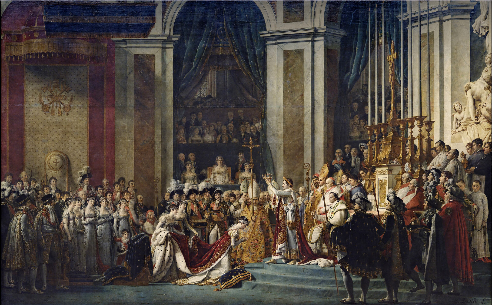
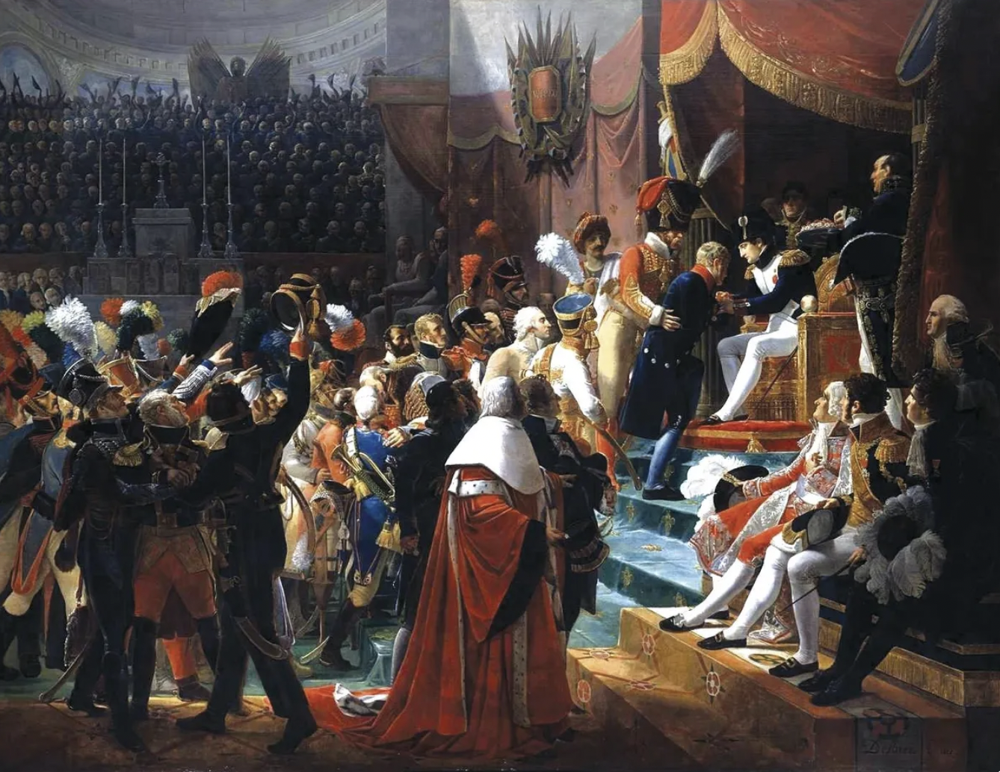
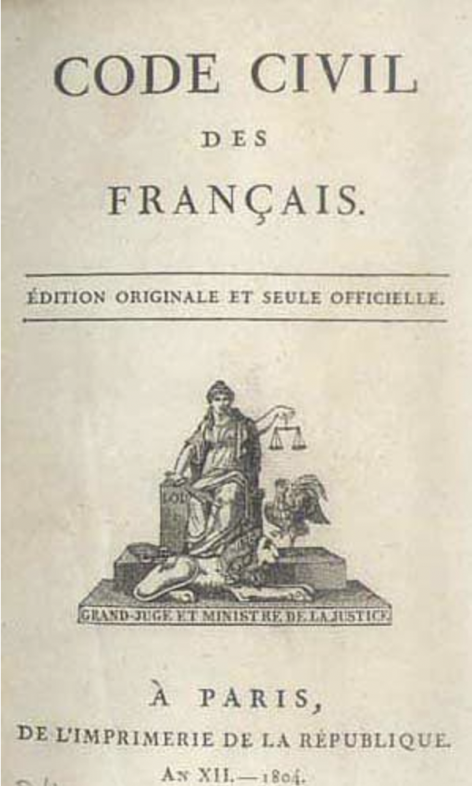
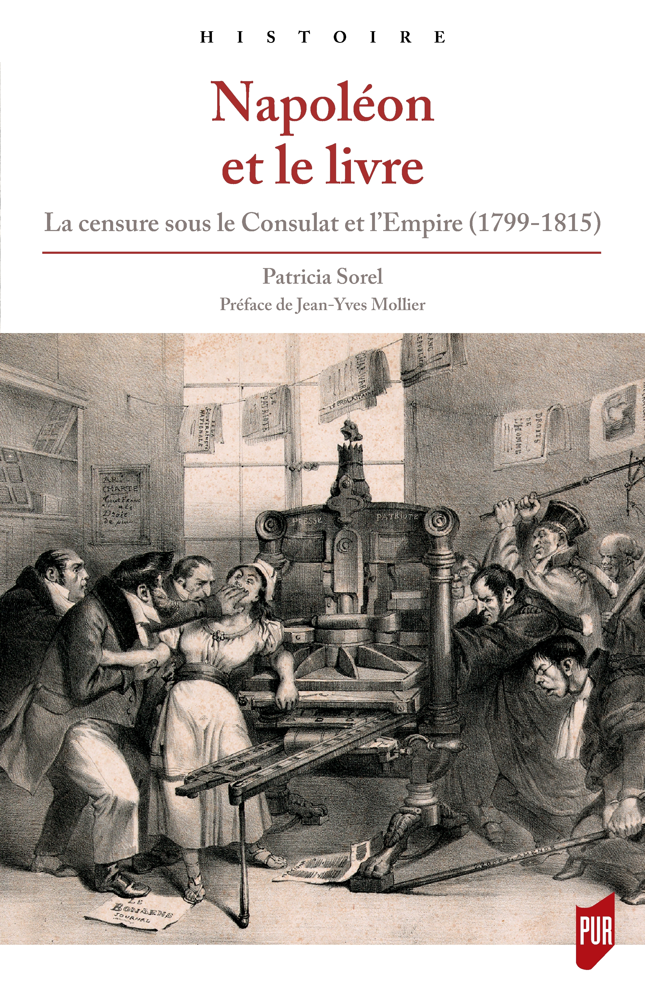
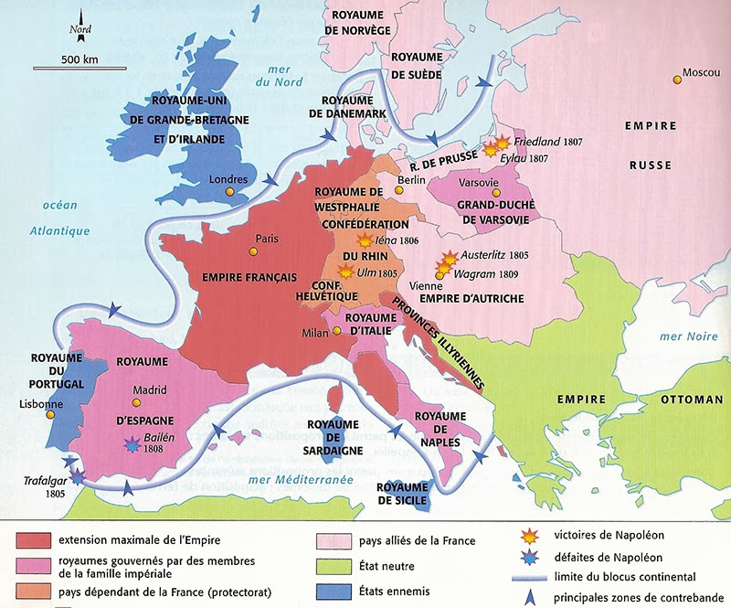
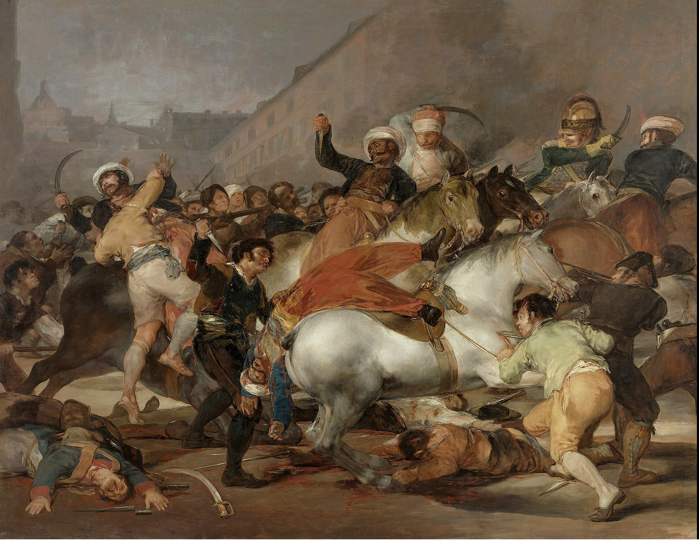
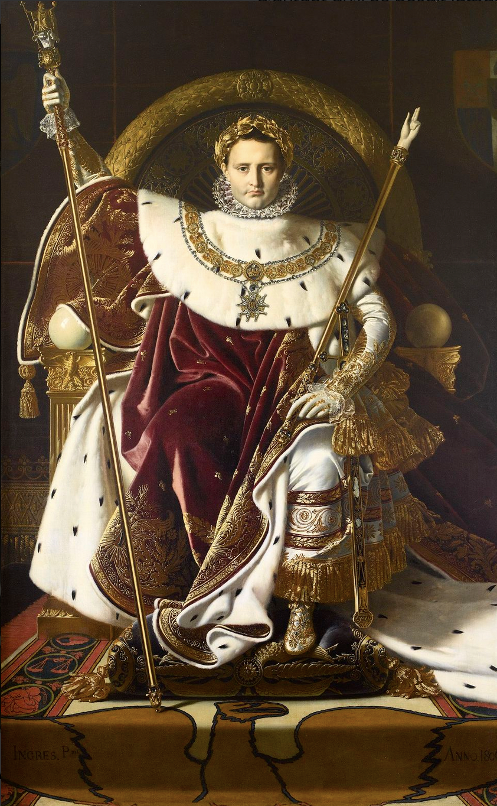

Napoléon : héritier ou fossoyeur de la Révolution française ?
En 1789, les Français se révoltent contre la monarchie absolue.
Ils veulent davantage de liberté et d'égalité. Pourtant, quelques
années plus tard, un homme prend progressivement tous les pouvoirs :
Napoléon Bonaparte.
Dans ce parcours, vous allez découvrir comment Napoléon conserve
certains changements apportés par la Révolution française, tout en
rétablissant un pouvoir personnel et autoritaire.
Votre objectif :
comprendre pourquoi Napoléon peut être considéré à la fois comme
un héritier et comme un fossoyeur de la Révolution française.
Comment allez-vous travailler ?
Ce cours se déroule en autonomie. Vous devez avancer dans les missions
dans l'ordre. Chaque mission correspond à une page.
Lisez attentivement les explications.
Observez les documents et répondez aux questions dans votre tête ou dans votre cahier.
Repérez les informations importantes.
Recopiez dans votre cahier les encadrés rouges intitulés « À retenir et noter dans le cahier ».
Lorsque vous avez terminé une mission, cliquez sur le bouton prévu pour accéder à la suivante.
Attention : vous ne devez pas simplement parcourir
les pages. Prenez le temps de lire, d'observer et de noter les
informations importantes. Vous aurez besoin de votre cahier pour
réaliser l'activité finale.
Comment présenter votre travail dans le cahier ?
Vous devez organiser votre cahier de manière claire. Chaque mission
doit commencer par un titre souligné. Les définitions et les éléments
essentiels doivent être faciles à retrouver.
HISTOIRE – La France au XIXe siècle
Chapitre 1
Mission 1 – Napoléon prend le pouvoir
En 1799, Napoléon Bonaparte prend le pouvoir par un coup d'État.
À retenir :
il devient Premier consul, puis empereur en 1804.
Vocabulaire : un coup d'État = prise du pouvoir
par la force ou par des moyens illégaux.
Document étudié : le tableau du Sacre de Napoléon.
Voici quelques règles à respecter :
Écrivez les titres et les dates lisiblement.
Sautez une ligne entre les différentes parties.
Recopiez intégralement les encadrés rouges.
Ne recopiez pas toutes les questions du parcours, sauf si cela vous est demandé.
À retenir et noter dans le cahier
Problématique du chapitre :
Napoléon est-il un continuateur ou un fossoyeur de la Révolution française ?
Un continuateur est une personne qui poursuit une
œuvre ou une action commencée avant elle.
Un fossoyeur est, au sens figuré, une personne qui
met fin à quelque chose.
Avant de commencer
Vérifiez que vous avez bien compris le fonctionnement du parcours.
MISSION 1 SUR 4
Napoléon prend le pouvoir et devient empereur
Comment un général de la Révolution française devient-il empereur ?
1. Un général qui profite des difficultés de la Révolution
Depuis 1789, la France a connu de nombreux bouleversements :
la fin de la monarchie absolue, la République en 1792, puis plusieurs
gouvernements qui se succèdent.
En 1799, la France est dirigée par le Directoire. Ce régime est
fragilisé par les difficultés économiques, les oppositions politiques
et les guerres.
Napoléon Bonaparte est un général qui s'est rendu célèbre grâce
à ses victoires militaires, notamment en Italie. Il profite de
la faiblesse du gouvernement pour prendre le pouvoir.
Le 18 Brumaire (9 novembre 1799) :
Napoléon organise un coup d'État avec l'aide de l'armée.
Il renverse le Directoire et devient Premier consul.
2. Du Premier consul à l'empereur
Napoléon concentre progressivement les pouvoirs entre ses mains.
En 1802, il devient consul à vie : il pourra rester au pouvoir
jusqu'à sa mort.
Le 18 mai 1804, un texte officiel instaure l'Empire. Napoléon
devient l'empereur des Français sous le nom de Napoléon Ier.
Le 2 décembre 1804, il organise une grande cérémonie à Notre-Dame
de Paris : le sacre. Il devient le chef d'un régime impérial.
DOCUMENT 1 – LE SACRE DE NAPOLÉON

Jacques-Louis David, Le Sacre de Napoléon, 1805-1807,
musée du Louvre. Le tableau représente le couronnement de
Joséphine par Napoléon, en présence du pape Pie VII.
Cette cérémonie reprend les traditions des anciennes monarchies.
Napoléon porte une couronne et des vêtements luxueux. Il met en
scène sa puissance et veut montrer que son pouvoir est prestigieux
et légitime.
Observez le tableau et répondez aux questions :
Quels personnages importants reconnaissez-vous dans cette cérémonie ?
Quels éléments montrent la richesse et la puissance de Napoléon ?
Pourquoi peut-on dire que Napoléon reprend des traditions monarchiques ?
Voir une aide pour répondre
Regardez les couronnes, les vêtements, les insignes impériaux,
la présence du pape et la place occupée par Napoléon.
La cérémonie rappelle les sacres des rois de France. Napoléon
souhaite donner à son pouvoir une dimension monarchique et dynastique.
3. Un pouvoir qui doit se transmettre
Napoléon ne souhaite pas seulement gouverner : il veut fonder une
nouvelle dynastie. Son pouvoir doit être transmis à ses descendants.
Il crée une nouvelle noblesse, récompense ses fidèles et distribue
des titres et des décorations, notamment la Légion d'honneur.
La Légion d'honneur, créée en 1802, récompense les services rendus
à l'État. De nombreux militaires en bénéficient.

Jean-Baptiste Debret, Première distribution des décorations de la Légion d'honneur, le 14 juillet 1804, 1812, huile sur toile (musée national du château de Versailles).
À retenir et noter dans le cahier
En 1799, Napoléon prend le pouvoir par un coup d'État et devient Premier consul.
En 1802, il devient consul à vie.
En 1804, il devient empereur des Français sous le nom de Napoléon Ier.
Il fonde un régime dynastique : le pouvoir doit être transmis dans sa famille.
Vérifiez que vous avez compris
MISSION 2 SUR 4
Napoléon conserve certains acquis de la Révolution
Napoléon est-il seulement un adversaire de la Révolution ?
1. Une volonté de conserver certains changements de 1789
Même s'il met fin à la République et concentre les pouvoirs entre
ses mains, Napoléon ne revient pas complètement à la situation
de l'Ancien Régime.
Il conserve plusieurs changements apportés par la Révolution
française. Il souhaite notamment construire un État plus organisé,
avec des règles communes pour tous les Français.
Avant la Révolution, les lois et les règles pouvaient varier selon
les régions et les traditions locales. Napoléon veut unifier
les règles sur l'ensemble du territoire français.
2. Le Code civil : des lois communes pour tous
DOCUMENT 1 – LE CODE CIVIL

Une édition ancienne du Code civil, également appelé
Code Napoléon. Le Code civil est adopté en 1804.
En 1804, Napoléon fait adopter le Code civil. Il s'agit d'un
recueil de lois qui organisent la vie des individus : mariage,
famille, propriété, héritage et contrats.
Ce code s'applique à l'ensemble du territoire français.
Il permet notamment de consolider plusieurs principes
de la Révolution :
L'égalité des citoyens devant la loi.
La protection de la propriété privée.
La fin des privilèges liés à la naissance.
Des règles communes pour tous les Français.
À vous de réfléchir :
Pourquoi est-il important d'avoir les mêmes lois dans toutes les régions de France ?
Quel principe de la Révolution est renforcé par le Code civil ?
En quoi cette réforme permet-elle de construire une France plus unifiée ?
Voir une aide pour répondre
Avant, les règles pouvaient varier selon les régions.
Le Code civil établit des règles communes et renforce
l'égalité juridique entre les citoyens.
3. Mais une égalité qui a ses limites
Attention : le Code civil ne garantit pas une égalité complète
entre tous les individus.
Les femmes mariées sont placées sous l'autorité de leur mari.
Elles ne disposent pas des mêmes droits que les hommes dans
la vie familiale et juridique.
L'article 213 du Code civil affirme :
« Le mari doit protection à sa femme, la femme obéissance à son mari. »
Cette règle montre que Napoléon conserve certains principes
révolutionnaires, mais qu'il maintient aussi une société
très inégalitaire entre les hommes et les femmes.
4. D'autres réformes durables
Napoléon réorganise également la justice, les finances et
l'administration.
Il crée les préfets en 1800 pour représenter le pouvoir central dans les départements.
Il réorganise les tribunaux et la justice.
Il développe la Banque de France et stabilise la monnaie.
Il organise les relations entre l'État et les religions avec le Concordat de 1801.
À retenir et noter dans le cahier
Napoléon conserve plusieurs acquis de la Révolution française.
Le Code civil de 1804 établit des lois communes pour tous les Français.
Il renforce l'égalité devant la loi et protège la propriété privée.
Napoléon réorganise la justice, les finances et l'administration.
Mais l'égalité reste limitée : les femmes mariées sont soumises à l'autorité de leur mari.
Vérifiez que vous avez compris
MISSION 3 SUR 4
Napoléon instaure un régime autoritaire
Comment Napoléon limite-t-il les libertés tout en prétendant
protéger les acquis de la Révolution ?
1. Un pouvoir concentré entre les mains de l'empereur
Sous l'Empire, Napoléon possède l'essentiel du pouvoir politique.
Il dirige le gouvernement, commande l'armée, nomme les principaux
responsables de l'administration et contrôle la justice.
Les assemblées existent toujours, mais leur rôle est limité.
Elles ne disposent pas d'un véritable pouvoir face à l'empereur.
Un régime autoritaire :
régime politique dans lequel le pouvoir est concentré entre les
mains d'un dirigeant ou d'un petit groupe, avec une limitation
des libertés et de l'opposition.
2. La liberté d'expression est limitée
Pendant la Révolution, la liberté de la presse avait été présentée
comme un droit essentiel. Sous Napoléon, cette liberté est fortement
contrôlée.
Les journaux sont surveillés et les articles qui critiquent
le gouvernement peuvent être interdits. Certains journaux sont
supprimés. La police surveille les opposants politiques.
DOCUMENT 2 – NAPOLÉON ET LA CENSURE

Illustration historique à propos du contrôle de la presse
sous Napoléon.
Napoléon ne souhaite pas que les journaux puissent critiquer
librement son gouvernement. Il fait surveiller les rédacteurs
et les publications.
Document écrit : une lettre de Napoléon à son ministre de la Police, 1805
« Mon intention est que vous fassiez appeler les rédacteurs
des journaux les plus en vogue, pour leur déclarer que s'ils
continuent d'alarmer l'opinion, leur durée ne sera pas longue :
que le temps de la Révolution est fini, qu'il n'y a plus en
France qu'un seul parti [...] qu'un beau jour, on leur fermera
la bouche ».
Napoléon Ier à Joseph Fouché, ministre de la Police, 1805.
À vous d'analyser le document :
À qui Napoléon adresse-t-il cette lettre ?
Que veut-il imposer aux journalistes ?
Quelle liberté fondamentale est remise en cause ?
Voir une aide pour répondre
Napoléon écrit à son ministre de la Police. Il lui demande
de faire pression sur les journalistes et de limiter
les critiques contre le gouvernement.
Il remet donc en cause la liberté de la presse et la liberté
d'expression.
3. La police surveille la population
Napoléon renforce également la police. Le ministre Joseph Fouché
organise la surveillance des opposants politiques et des journaux.
Des personnes considérées comme dangereuses pour le régime peuvent
être arrêtées ou emprisonnées sans jugement ordinaire.
La population est également soumise à la conscription : les jeunes
hommes doivent effectuer leur service militaire et peuvent être
envoyés combattre dans les guerres de l'Empire.
À retenir et noter dans le cahier
Napoléon met en place un régime autoritaire :
L'empereur concentre l'essentiel des pouvoirs.
Les assemblées ont un rôle limité.
La presse est censurée et les journalistes sont surveillés.
La police contrôle la population et les opposants politiques.
La conscription oblige les jeunes hommes à servir dans l'armée.
Vérifiez que vous avez compris
MISSION 4 SUR 4
Napoléon domine l'Europe : diffusion ou domination ?
Comment Napoléon diffuse-t-il les principes de la Révolution
tout en imposant sa domination aux peuples européens ?
1. Un Empire qui s'étend par les conquêtes militaires
Napoléon mène de nombreuses guerres en Europe. Grâce aux victoires
de son armée, il étend progressivement son influence sur une
grande partie du continent.
Certains territoires sont directement annexés à la France.
D'autres deviennent des États dépendants de Napoléon, dirigés
par des membres de sa famille ou par des souverains qui lui
sont soumis.
DOCUMENT 3 – L'EUROPE NAPOLÉONIENNE EN 1811

L'Europe sous domination napoléonienne en 1811.
Carte historique à compléter et à lire à l'aide de sa légende.
À vous d'observer la carte :
Quel pays se trouve au centre de l'Empire napoléonien ?
Quels grands territoires européens sont sous la domination de Napoléon ?
Napoléon domine-t-il uniquement le territoire français ?
Comment impose-t-il son pouvoir sur les autres territoires ?
Voir une aide pour répondre
La France est au centre de l'Empire. Napoléon domine notamment
une grande partie de l'Italie et de l'Allemagne ainsi que
plusieurs territoires voisins.
Cette domination repose sur les conquêtes militaires,
les annexions et la mise en place d'États alliés ou soumis.
2. Des principes révolutionnaires diffusés en Europe
Dans les territoires conquis, Napoléon introduit parfois
des réformes inspirées de la Révolution française :
La suppression de certains privilèges de l'Ancien Régime.
L'égalité devant la loi.
La protection de la propriété privée.
La mise en place de nouvelles règles juridiques inspirées du Code civil.
Ces changements peuvent moderniser les institutions et les lois.
Mais ils sont imposés par un pouvoir étranger qui ne laisse pas
toujours les populations décider de leur avenir.
DOCUMENT 4 – LE ROYAUME DE WESTPHALIE, 1807
Le royaume de Westphalie est créé par Napoléon en 1807, dans
le nord de l'Allemagne. Il est confié à son frère Jérôme Bonaparte.
Extraits de la Constitution du royaume de Westphalie :
Article 6 : Le royaume de Westphalie sera
héréditaire dans la descendance directe, naturelle et légitime
du roi Jérôme Napoléon, de mâle en mâle, par ordre de
primogéniture, et à l'exclusion perpétuelle des femmes et
de leur descendance.
Article 10 : Le royaume de Westphalie sera
régi par des constitutions qui consacrent l'égalité de tous
les sujets devant la loi et le libre exercice des cultes.
À vous d'étudier le texte :
Quel principe révolutionnaire est affirmé dans l'article 10 ?
Qui doit gouverner le royaume de Westphalie selon l'article 6 ?
Pourquoi cette Constitution présente-t-elle une contradiction ?
Voir une aide pour répondre
L'article 10 affirme l'égalité devant la loi et la liberté
religieuse. Ce sont des principes hérités de la Révolution.
Mais l'article 6 prévoit que le royaume sera transmis dans
la famille de Jérôme Bonaparte. Napoléon impose donc une
monarchie héréditaire à la tête de cet État.
3. Les peuples européens résistent à Napoléon
Les conquêtes françaises ne sont pas acceptées partout.
Dans plusieurs pays, des populations se révoltent contre
la présence des troupes françaises.
C'est notamment le cas en Espagne, où la population de Madrid
se soulève contre les soldats français en mai 1808.
DOCUMENT 5 – LA RÉVOLTE DE MADRID EN 1808

Francisco de Goya, Le Deux Mai 1808, peint en 1814.
La population madrilène se soulève contre les troupes françaises.
Cette peinture représente la révolte de Madrid contre les
soldats français. La guerre d'Espagne devient un conflit
particulièrement violent.
À vous d'observer :
Quels groupes s'affrontent dans cette scène ?
Quelle impression se dégage du tableau ?
Pourquoi peut-on dire que les peuples européens ne sont pas tous favorables à Napoléon ?
Voir une aide pour répondre
Des habitants espagnols affrontent les soldats français.
La violence de la scène montre le rejet de l'occupation.
Les conquêtes napoléoniennes provoquent des résistances :
certains peuples refusent d'être dirigés par un souverain
imposé depuis la France.
À retenir et noter dans le cahier
Napoléon étend son Empire en Europe grâce aux conquêtes militaires.
Il diffuse certains principes de la Révolution, comme l'égalité devant la loi.
Il impose aussi son autorité en plaçant des membres de sa famille à la tête de certains États.
Les peuples européens résistent parfois à cette domination, comme en Espagne en 1808.
Vérifiez que vous avez compris
ACTIVITÉ FINALE

Ingres, Napoléon Ier sur le trône impérial en costume de sacre, 1806, huile sur toile, 2,6 x 1,63 m (musée de l'Armée, Paris)
⚖️ ALERTE ! LE PROCÈS DE NAPOLÉON EST OUVERT !
Napoléon Bonaparte comparaît aujourd'hui devant un tribunal
pour répondre d'une accusation grave : avoir trahi les idéaux
de la Révolution française.
Mais son avocat affirme qu'il a également conservé plusieurs
acquis de la Révolution et modernisé la France.
Vous êtes juré. Votre mission est d'examiner les preuves,
de confronter les arguments et de rendre votre verdict.
⏱️ Votre mission : 10 minutes
Travail individuel : vous devez mener votre propre réflexion
et rendre un jugement argumenté.
Problématique du procès :
Napoléon est-il un continuateur ou un fossoyeur
de la Révolution française ?
ÉTAPE 1 – Prenez connaissance des accusations
Le procureur présente les éléments qui peuvent montrer
que Napoléon a trahi les idéaux de la Révolution.
⚔️ Les preuves de l'accusation
PREUVE N°1 – Un pouvoir personnel
En 1799, Napoléon prend le pouvoir par un coup d'État.
En 1804, il devient empereur et concentre l'essentiel
des pouvoirs entre ses mains.
Pourquoi est-ce une accusation ?
La Révolution avait mis fin à la monarchie absolue
et proclamé la souveraineté de la nation.
Napoléon rétablit un pouvoir personnel et héréditaire.
PREUVE N°2 – La liberté d'expression menacée
Sous Napoléon, les journaux sont censurés et les opposants
politiques surveillés par la police.
Pourquoi est-ce une accusation ?
La liberté d'expression et la liberté de la presse
sont des principes importants défendus pendant
la Révolution française.
À VOUS DE JOUER : retenez deux preuves à charge.
ÉTAPE 2 – Découvrez les arguments de la défense
L'avocat de Napoléon présente maintenant les éléments
qui permettent de défendre son client.
🛡️ Les preuves de la défense
PREUVE N°3 – Le Code civil
En 1804, Napoléon fait adopter le Code civil.
Il établit des règles communes pour tous les Français
et renforce notamment l'égalité devant la loi.
Pourquoi est-ce un argument de défense ?
Le Code civil conserve plusieurs acquis de la Révolution :
la fin des privilèges de naissance, l'égalité juridique
et la protection de la propriété privée.
PREUVE N°4 – La diffusion des idées révolutionnaires
Dans plusieurs territoires européens conquis, Napoléon
diffuse certaines réformes inspirées de la Révolution,
notamment l'égalité devant la loi et la suppression
de certains privilèges.
Pourquoi est-ce un argument de défense ?
Napoléon contribue à diffuser certains principes
révolutionnaires au-delà des frontières françaises.
À VOUS DE JOUER : retenez deux preuves à décharge.
ÉTAPE 3 – Préparez votre jugement
⚖️ Le jury doit maintenant se prononcer !
Vous avez étudié les arguments de l'accusation et ceux
de la défense. C'est maintenant à vous de prendre une décision.
Quel verdict choisissez-vous ?
ÉTAPE 4 – Rédigez votre verdict argumenté
Un bon juré ne se contente pas de donner son avis :
il doit justifier sa décision à l'aide de faits historiques.
✍️ Votre décision finale
Rédigez un court paragraphe de 4 à 6 lignes pour expliquer
votre décision.
Pour vous aider, utilisez les expressions suivantes :
Tout d'abord...
En effet...
Cependant...
Pour conclure...
LE VERDICT DE L'HISTOIRE – À RETENIR
Napoléon est à la fois un héritier et un fossoyeur
de la Révolution française.
Il conserve certains acquis révolutionnaires, notamment
l'égalité devant la loi, le Code civil et la protection
de la propriété privée.
Mais il met fin à la République, concentre les pouvoirs,
limite les libertés et impose sa domination à plusieurs
peuples européens.
Le régime napoléonien présente donc une contradiction :
il conserve certains principes de la Révolution tout en
abandonnant plusieurs de ses idéaux politiques.
Avant de terminer le procès
🎉 Bravo ! Procès terminé !
Vous avez rendu votre verdict et étudié les contradictions
du régime napoléonien.
Vous pouvez maintenant relire votre justification
et vérifier que vous avez répondu à la problématique
du chapitre.
Bravo ! Vous avez terminé le parcours.
Vous avez étudié les contradictions du régime napoléonien :
la conservation de certains acquis de la Révolution et la mise
en place d'un pouvoir personnel et autoritaire.
Vous pouvez maintenant relire vos notes et vérifier que votre
réponse argumentée répond bien à la problématique.